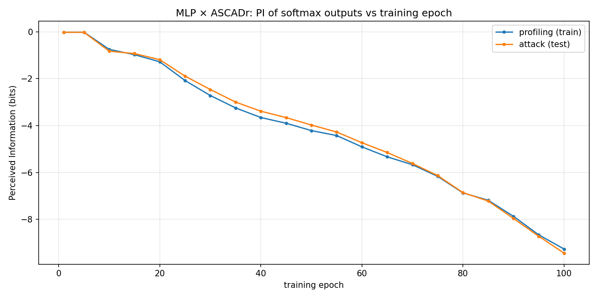

Chapter 8 — Perceived Information
Chapter 7 answered how a finished model recovers a key byte: remap each softmax onto key guesses, multiply votes across traces, watch guessing entropy fall to 1. For the epoch-100 ASCADr MLP that took on the order of 86 attack traces.
That leaves a different question. The weights at epoch 100 are not the weights at epoch 1. Why does that finished network produce softaxes that are worth accumulating at all? Something must change during the 100 training epochs. This chapter introduces the scalar used to watch that change: Perceived Information (PI).
Reading order
- Why Chapter 7’s “how” is not enough.
- Why a new metric (PI), not only GE on every checkpoint.
- What PI is, in bits, from the same softmax tables.
- Why plot PI against epoch.
- What that means on masked ASCADr — and what it does not mean.
- The open question that starts Act III.
1. Why “how the attack works” is not “why the model can attack”
Chapter 7 used one checkpoint: the end of training. The attack recipe
(hypotheses, product of votes, GE) would be the same at epoch 10 or epoch
50; only the softaxes change. If early softaxes put almost no mass on the
true y, products of votes stay uninformative and GE stays near random.
So the operational success in Chapter 7 already assumes an answer to a prior “why”: because, by epoch 100, the model’s outputs carry usable information about the intermediate label. Chapter 8 makes that assumption measurable.
The first-layer weight maps of Chapter 5 suggested where in time the network listens. That is intuition about the input side. PI asks about the output side: how much the probability tables know.
2. Why not only recompute guessing entropy every epoch?
One could, in principle, run the full Chapter 7 attack on every checkpoint and plot “traces to GE = 1” versus epoch. That remains a valid check. It is also heavy (many random draws, many traces, 100 models) and it still answers an attack question: after enough measurements, is the true key first?
PI answers a narrower output question with one number per checkpoint:
Given the softmaxes and the true labels, how informative are those probability tables about the sensitive variable on individual traces?
| Guessing entropy (Ch. 7) | Perceived Information (this chapter) | |
|---|---|---|
| Why use it | Declare attack success | Watch learning in the outputs |
| Object | Ranking of key guesses g |
Softmax over labels y |
| Combines many traces? | Yes (product / sum of logs) | No — aggregates per-trace log-probs of the true class |
| Typical x-axis | Number of attack traces | Training epoch |
| Typical success shape | Curve → 1 | Curve moves when outputs become informative |
Same network outputs; different “why.” GE asks why the scoreboard of key candidates eventually picks a winner. PI asks why those votes were worth casting in the first place.
3. What PI is
The package function information in profiling_and_attack.py estimates a
mutual-information-style quantity in bits between the sensitive label
(here the identity intermediate class) and the model’s predicted
probabilities.
Operationally, with 256 classes:
- Estimate the label frequencies (p(k)) on the evaluation set.
- Start from the label entropy (H(K)) in bits.
- For each class (k), average (\log_2 P(y=k)) over traces whose true label is (k), weight by (p(k)), and add.
If, whenever the true class is (k), the softmax puts substantial mass on
(k), PI rises. If the true class is buried (as on the single-trace example
in Chapter 7, where true y = 145 had probability ~10⁻⁶), those terms pull
PI down.
Limit: PI is scored against the labels we choose. In this thread that
is the unmasked identity label y = Sbox[p ⊕ k]. PI is not “bits of the AES
key” in the GE sense, and it is not a proof of what a hidden layer computes.
4. Why plot PI against epoch
Chapter 6 saved weights after every epoch. No retraining is required:
for selected epochs e in 1 … 100:
load mlp_ascadr checkpoint e
predict softmaxes on profiling traces and on attack traces
PI_train(e), PI_attack(e) ← information(...)
The companion notebook evaluates every fifth epoch (plus the endpoints). Plotting those series is the point of the metric: a stretch that barely moves means the outputs are stable for this labelling; a clear move means training changed what the softmaxes know. Train and attack curves moving together means the change generalizes; only the train curve moving suggests memorization.

On this ASCADr MLP run, PI against the unmasked identity label sits near 0 at epochs 1–5 (about −0.02 bits on both sets), then falls steadily: by epoch 10 already near −0.8 bits on the attack set, and by epoch 100 about −9.3 bits (train) and −9.4 bits (attack). The two curves stay close — whatever is changing generalizes off the profiling set.
That plot is a seismograph of learning in the outputs. It does not yet open the box (no PCA, no patching). It tells when to look. Reading the vertical direction needs the masked-data caveat next.
5. Why ASCADr’s curve looks “wrong” at first glance
Lower (more negative) PI here does not mean “the attack is getting
worse.” Chapter 7 already showed GE → 1 for the epoch-100 model. The scalar
is asking a different question: how well do the softmaxes match the
unmasked label y = Sbox[p ⊕ k]?
ASCADr is masked (Chapter 3). The chip does not expose that
plain y alone. As training proceeds, the network can organize around
masked structure while this PI score keeps grading the model against the
unmasked class. Agreement with that labelling can fall even as multi-trace
key ranking (Chapter 7) becomes possible — weak, biased votes about y_g
can still multiply into a winner.
Limits:
- PI ≠ GE. One is about per-trace label informativeness under a chosen labelling; the other is about ranking key guesses over many traces.
- A decreasing PI curve on ASCADr is expected for this labelling choice; it is not a contradiction of attack success.
- PI still does not prove what a hidden layer computes. It only marks when the outputs’ relationship to the unmasked label changes — preparation for asking what appeared inside the net at those moments.
6. Next
We can now say why a scalar over training is needed after the Chapter 7 recipe: to see when the softaxes become worth accumulating. The remaining question is sharper:
When along the 100 epochs does PI move, and do profiling and attack move together?
That is the start of Act III — phase transitions during training.
← Previous: What changes during learning · Index · Next: Appendix — Datasets guide →